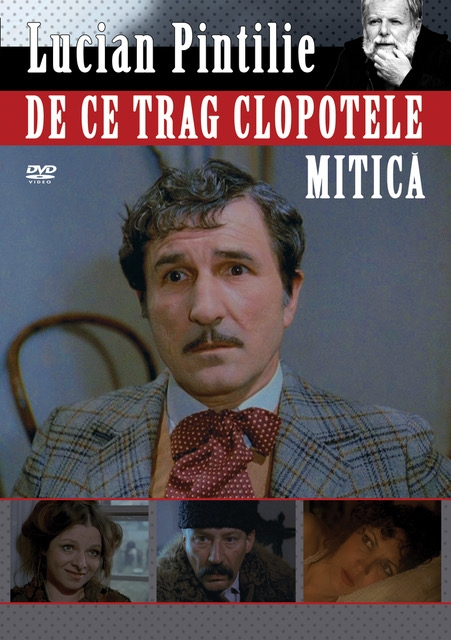

Filme de comedie
Amza Pellea-Momente de aur
7.9
Nea Mărin, Sucă, Sache, Veta sau Nașu’ Pantelicã sunt tot atâtea memorabile figuri,
mereu fermecãtoare ce meritã revăzute pentru că și-au dobândit, prin talentul
aceluia ce le-a dat viață, nu doar celebritatea ci și puterea de-a rezista,
la fel de pline de vervă și de amuzante, peste vreme.
BD intră în acțiune
8.6
Două cazuri de furt, aparent banale, îi conduc pe Căpitanul Panait (Toma Caragiu), Plutonierul
Căpșună (Sebastian Papaiani), Sergentul major Cristoloveanu (Dumitru Furdui) și câinele
Costel pe urmele unei adevărate rețele de borfași. Confruntarea cu vestitul "trio" Gogu (Dem
Rădulescu) - Trandafir (Puiu Călinescu) - Patraulea (Jean Constantin) naște situații comice
irezistibile.
BD în alertă
8.6
Brigada Diverse (Căpitanul Panait, Plutonierul Căpșună, șoferul - sg.maj. Cristoloveanu si
câinele Costel) primește misiunea de a descoperi proveniența unor bani falși. Eroii pun la cale
o capcana pentru a-i prinde în flagrant delict pe infractori, dar aceștia reușesc să scape. Luând
apoi urma celor trei borfași (Gogu, Trandafir și Patraulea), Brigada ajunge în sediul
falsificatorilor, unde constată că șeful lui Panait, Maiorul Dobrescu, îi arestase deja pe bandiți.
BD la munte și la mare
8.6
B.D. la munte și la mare (Brigada Diverse 3) 1972, este al treilea film din mini-serialul Brigada
Diverse, un mini-serial de comedie în care se regăsesc mari actori ca: Toma Caragiu, Jean
Constantin, Dem Rădulescu, Iurie Darie, Sebastian Papaiani, Puiu Călinescu.
Ultima parte (din păcate) a capodoperei cinematografice B.D, cel mai bun film românesc de
comedie din toate timpurile, având parte de o distribuție de excepție și o interpretare
magistrală.
Nea Mărin miliardar
8.3
Nea Marin (Amza Pellea), ajuns la mare, se trezește peste noapte în rolul unui miliardar
american care trebuie să aibă de-a face cu mafioți, presa, viața de lux și câte și mai câte. Acest
lucru însă nu-l sperie. El rezolva lucrurile cu calm, la fel ca la el în sat, unde Veta (Draga
Olteanu-Matei) era consilierul lui de bază și - nu în ultimul rând - soția lui. Cu o distribuție de
mare spectacol, Sergiu Nicolaescu reușește să dea lovitura și să realizeze cea mai cunoscută
comedie românească.
Astă seară dansăm în familie
8.3
Temistocle T. Temistocle (Dem Radulescu) și Alecu A. Alecu (Sebastian Papaiani), doi
logodnici de profesie, colindă prin țară pentru a escroca femeile dornice să se mărite. În plasa
celor doi Don Juani care se prezintă drept persoane respectabile cad numeroase victime de
diferite vârste, de la care aceștia reușesc să obțină importante sume de bani în schimbul
promisiunilor de căsătorie.

Filantropica
8.4
În Bucureștiul secolului XXI, a ieși în oraș sâmbătă seara la brațul unei femei frumoase e o
investiție financiară riscantă. Ovidiu (Mircea Diaconu), modest profesor de liceu, nu și-ar
putea-o permite. Și totuși trebuie, căci s-a îndrăgostit până peste cap de Diana (Viorica Vodă),
o mică sirenă de 20 de ani cu veleități de manechin. În căutarea unei surse de venit ceva mai
consistente decât o biată leafă de profesor, Ovidiu plonjează într-o lume fabuloasă - mafia
cerșetorilor... Unul din capii acesteia îl ia sub aripa sa.
Cuibul de viespi
8.4
În 1936, un timp în care Bucureștiul a fost cunoscut ca "Parisul Estului", cele trei surori
Duduleanu, dintr-o familie de comercianți prosperi, își conduc clanul cu mână de fier. Tânărul
jurnalist Mircea Aldea intră în acest clan prin căsătoria cu fiica lor, dar această unire va fi de
scurtă durată.
Titanic Vals
8.6
Destinul unui om obișnuit și onest intrat, fără voie, în malaxorul electoral al vieții politice
românești interbelice, care-l manipulează aducându-l în starea de victimă. Ecranizare dupa
piesa cu acelasi nume de Tudor Musatescu.
Admirator al operei caragialiene, Tudor Mușatescu reia subiectul vieții politice românești din
perioada interbelică.

Operațiunea Monstrul
8.8
Un grup de cinci bărbați, prieteni sau colegi de serviciu, pleacă, fără știrea nevestelor, într-o expediție în Deltă.
La pescuit, respectiv la vânătoare, personajele ajung în situații dintre cele mai ridicole și amuzante.
Comicul de situații erupe în momentul în care, contrar uzantelor vremii, Corneluș, cel mai mic în ierarhie, prinde Monstrul
Secretul lui Bachus
8.4
Victor, un ziarist incisiv, descoperă o serie de nereguli într-o întreprindere agricolă de stat.
Investigațiile temerarului jurnalist vor scoate la iveală potlogăriile comise
de către responsabilul unei unități de desfacere a vinului, supranumit Bachus.
Deși ajutat de un numâr impresionant de acoliți, Bachus nu-și va putea ascunde la infinit infamul secret...

De ce trag clopotele,Mitică?
8.3
Interzis timp de zece ani, filmul se bazează pe piesa De-ale Carnavalului a lui I.L. Caragiale
și explorează universul micii burghezii meschine, o lume a concreteței și-a culorii,
măcinată de nimicuri și aventuri sentimentale, o lume de o morală dubioasă care-și asumă sincer și zgomotos pasiunile.
O lume rea, cu un limbaj urât și o minte îngustă. Didina Mazu, amanta lui Pampon, este îndrăgostită de Nae Girimea,
bărbierul și Don Juan-ul cartierului. Dar Nae e și amantul Miței…